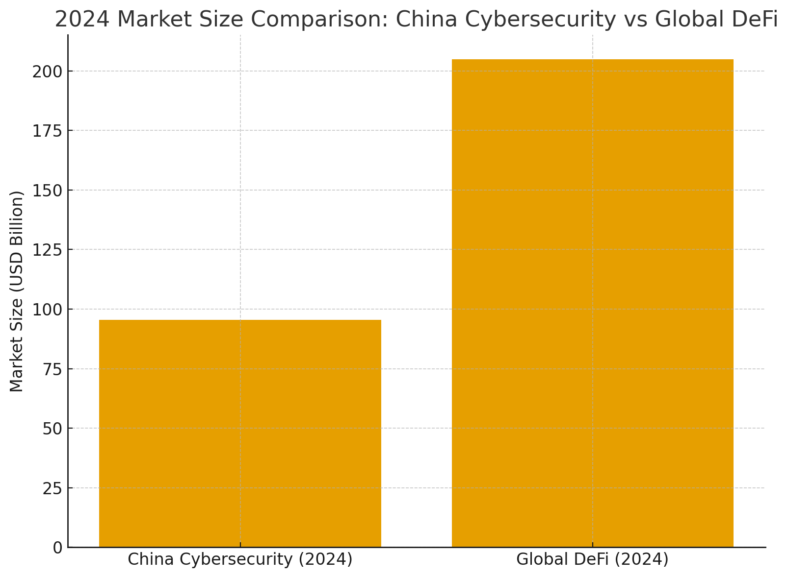

转行研究-网络安全与Defi
上一篇： 转行研究-网络安全与云计算
在 Decentralized Finance (DeFi) 市场规模方面，有几个不同的衡量方法与报告，下面给你整理几个关键数据点，并说明它们的区别与解读。
✅ 关键数据点
- 根据 DefiLlama 的数据显示，全球 DeFi 协议的 “总锁仓价值（TVL, Total Value Locked）”大约为 US $ 133 billion（约 1330 亿美元）。(DeFi Llama)
- 市场研究报告显示：2024 年全球 DeFi 市场规模估计约 US $ 20.48 billion（约 205 亿美元）。(Grand View Research)
- 还有一些预测，指出到 2030 年、2033 年市场可能增长至 US $ 231.19 billion（约 2310 亿美元） 或更多。(Grand View Research)
根据IDC数据，中国网络安全市场规模从2019年的73.5亿美元增至2024年的95.5亿美元

⚠️ 注意事项与解读
- 锁仓价值（TVL） 指的是用户存入 DeFi 协议合约中的资产总价值。这反映流入协议的规模，但不完全等同于“市场规模”或“营收规模”。
- “市场规模”在不同报告中定义不同：可能指协议预计收入、借贷规模、交易量、技术市场价值等。
- 由于 DeFi 涉及重叠资产、跨链、杠杆、重复计算等问题，TVL 也可能存在高估情况。(arXiv)
- 报告预测数据假设很多因素（如技术发展、监管环境、用户增长）都朝正面发展，实际可能偏差。
🔍 综合解读
- 当前（截至 2025 年中/下旬）可认为 DeFi 生态的锁仓规模在 约 1000 多亿美元 级别。
- 如果按“市场规模”即未来预估营收或整个生态价值来看，则在未来几年可能增长至数千亿美元。
- 所以，如果你以“加入 DeFi 行业”视角来看，它已经不是一个极其小的市场，而是有较大规模、但也还处于成长阶段、高风险／高波动的状态。
如果你愿意，我可以帮你查找按地域（如亚太／香港）和应用场景（DEX、借贷、保险等）细分的 DeFi 市场规模数据，这对于你考量 “香港 DeFi 行业” 的潜力会更有帮助。你看要不要？
香港有哪些值得加入的defi公司
下面我给你整理一份2025 年在香港值得加入的 DeFi / Web3 金融公司名单，涵盖：
- 真正落地香港
- 有融资、有产品、有收入或有前景
- 对安全、攻防、智能合约审计人才有强需求（与你背景契合）
我把公司按类型分类，并说明 发展前景、岗位类型、加入价值。
一、头部 DeFi 协议（在香港设办公室/实体）
1. OKX（OKX Web3 + DeFi 团队）
虽然 OKX 是中心化交易所，但它在香港大规模布局 DeFi 钱包、Restaking、链上衍生品、DApp 聚合器。
香港办公室规模大、岗位稳定、薪资高。
适合你理由：
- 强需求安全与审计背景
- Web3 产品线丰富
- 薪资在香港业内的上游（年包 60–120 万港币）
2. HashKey（HashKey Exchange + HashKey Group）
香港合规交易所 + Web3 基建商，重点做 香港合规 DeFi / Tokenisation / RWA。
加入价值：
- 金融科技背景浓厚
- RWA、链上借贷等业务很可能爆发
- 对安全工程、web3风险控制需求强
3. Animoca Brands（全球最知名 Web3 投资公司之一）
总部设在香港，投了几十个 DeFi 项目，包括：
- Immutable
- Polygon
- Yuga Labs
- 多个 DeFi 游戏化金融项目
虽然不是直接做 DeFi 协议，但其孵化的 Web3 金融产品非常多。
加入价值：
- 做 Web3 投资 + DeFi 产品
- 公司影响力非常大
- 适合想进入更国际化的 Web3 圈子
二、在香港设点的全球 DeFi 协议公司
4. Chainlink Labs（预言机龙头）
香港长期招聘：
- 安全工程师
- 研究工程师
- 节点运营
- Web3 DevRel
Chainlink 本身是 DeFi 基础设施之一，你参与的不是“炒币”，是 链上数据和跨链技术。
加入价值：
- 顶级技术团队
- 远程友好
- 薪资极高（全球统一薪资水平）
5. ConsenSys（MetaMask、Infura 母公司）
虽然不是纯 DeFi，但所有 DeFi 用户都需要 MetaMask 或 Infura。
香港岗位包括：
- 区块链安全职能
- Web3 基础设施
- DeFi 钱包产品
加入理由：
- 全球以太坊生态核心团队
- 在香港/新加坡长期招聘
- 品牌价值极高
三、在香港快速扩张的新兴 DeFi 公司
6. Pendle Finance（固定收益 DeFi 协议）
全球增长最快的 DeFi 项目之一（TVL>数十亿美元）。
核心团队新加坡，但在香港频繁活动并招聘远程员工。
优势：
- 产品复杂度高（适合安全、攻防背景的人）
- 固定收益 + RWA + Restaking 未来大方向
7. EigenLayer / Eigen Foundation（Restaking 龙头）
虽然总部不在香港，但香港招聘多、活动频繁、资金雄厚。
如果你愿意远程，EigenLayer 是顶级选择，尤其需要：
- Security Engineer
- Protocol Researcher
- Auditing Engineer
8. Scroll / Linea / zkSync（ZK Rollup 团队）
ZK Layer2 都在香港活动密集（黑客松、招聘会）。
不算 DeFi，但属于“DeFi 奠基层”，生态非常强。
适合做：
- 节点安全
- ZK 电路安全
- 合约审计
四、香港本地 DeFi 初创 & 基础设施公司
9. OSL Digital Securities
香港持牌虚拟资产机构（已获 1 号、7 号牌照）。
做合规 Tokenisation（资产上链），RWA 较多。
加入价值：
- 合规风控 + 区块链安全是核心需求
- 稳定性比纯 DeFi 好
10. Aspen Digital / MaiCapital / Victory Securities
这些是香港合规的数字资产 / DeFi 投资公司，管理的产品很多涉及：
- DeFi 收益策略
- 链上固定收益
- RWA
适合你理由：
- 对技术背景 + 安全背景的人需求大
- 投资+技术双路线发展
五、真正纯 DeFi（在香港活动最密集）
这些项目的核心团队不一定在香港，但在香港开放招聘和办活动非常活跃，属于目前最值得加入的纯 DeFi 协议：
11. Aave Companies（全球借贷协议第一）
12. Uniswap Labs（DEX 龙头）
13. Lido Finance（质押龙头）
14. dYdX Foundation（衍生品龙头）
15. GMX / Hyperliquid（链上永续交易所）
这些团队普遍：
- 薪资极高
- 完全远程
- 全球化
- 需求大量安全、审计、攻防背景的人
你的背景非常契合。
✅ 最终推荐（按你的背景优先度排序）
你有：“渗透测试、安全研究、高级攻防工程师经验”，这在 DeFi 是最稀缺能力。
优先推荐（适合你，薪资最高）
- Chainlink Labs
- EigenLayer
- Aave / Uniswap / dYdX / Lido（全球纯 DeFi 协议远程岗）
- Pendle Finance
- OKX Web3（香港）
中等推荐（稳定性高）
- HashKey
- OSL / Victory Securities（合规牌照机构）
适合长期发展的（Web3 基建）
- ConsenSys
- Animoca Brands（投资 + 生态）
如果你愿意，我可以帮你进一步做两件事：
- 根据你在香港的签证（高才通 + 续签薪资要求）
→ 给你筛选哪些公司工资一定能满足续签条件 - 帮你列出
→ “香港可投递 DeFi 岗位清单 + 投递链接 + 职位要求”
你要我继续帮你做这两项吗？